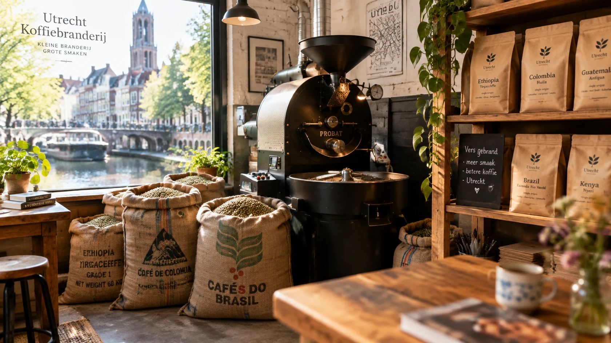

Coffee roastery · Utrecht
Roasted in small batches. Served fresh.
Roasted to order in our workshop on the canal and shipped within 48 hours.
- Roasted the day before it ships
- Free shipping over €40
- No subscription, order when you like

- Since 2021Small roaster, 5 kg batches
- Roasted to orderNever from a shelf
- Ships in 48 hWith PostNL, in the Netherlands
- Pickup in UtrechtFree, Tue–Sat
Favourites
Start with one of these

About
Hi, I'm Giulia.
I started roasting after a trip to Italy showed me what fresh beans can do. Today I roast 5 kg at a time in a small workshop on the Oudegracht and ship the coffee while it is still young.
What customers say
Sample reviews, written for this practice project.
Canale Blend is now our daily coffee. Soft, round, and it arrived two days after I ordered.
Domtoren makes a proper espresso with real crema. Even my Italian father-in-law approved.
The Ethiopia tastes like peach tea, in the best way. I order a 1 kg bag every month now.
I gave the Discovery set as a gift. Lovely box, and three coffees I would never have picked myself.
Picked up my order at the workshop. Giulia explained the grind for my moka. Great service.
Quick answers
How fast do you ship?
Orders ship within 48 hours with PostNL, in the Netherlands. Shipping is €4.95, free over €40.
Which grind should I choose?
Whole beans stay freshest. No grinder? Choose moka, filter or espresso and we grind it just before packing.
How fresh is the coffee?
We roast to order, the day before it ships. It tastes best in the first weeks after roasting.
Can I return something?
Accessories can be returned within 14 days. Opened coffee cannot be returned, but write to us if something is wrong.
Can I pick up my order?
Yes, for free at the workshop, Tue–Sat 09:00–17:00. Choose pickup at checkout.
Visit
Visit the workshop
Come and smell the roast. Giulia is there most days.
TostinoOudegracht 112
3511 AX Utrecht
The Netherlands